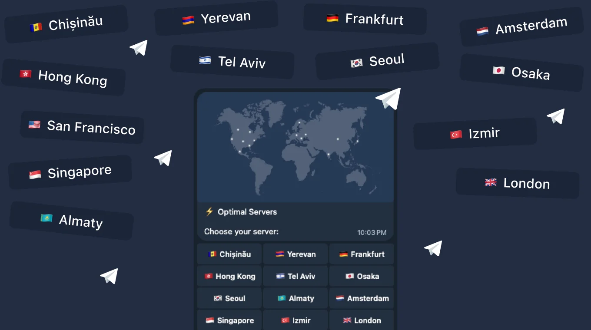

Bot Telegram VPN Unlimited
Accès via Telegram
Telegram
Avantages :
- Chiffrement sécurisé des données
- Facile à utiliser sur votre appareil
- Accès à 3000 serveurs dans le monde
- Garantie de remboursement de 30 jours

VPN pour bot Telegram VPN Unlimited
Protégez le trafic sur bot Telegram VPN Unlimited avec VPN Unlimited, masquez votre IP et connectez-vous à un serveur VPN privé en quelques secondes.
Obtenez VPN Unlimited pour d'autres plateformes
Téléchargez l'application VPN pour d'autres plateformes ainsi que pour Windows. Rapide, sécurisée et illimitée !
Essai gratuit de 7 joursGarantie de remboursement de 30 jours